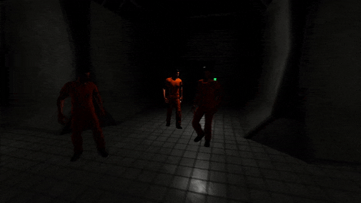

Recent News
Update 0.4.4

Features
- Added news post to main menu
- Enabled custom level uploading
- SCP AI can now travel between containment zones
- Added random commotion SFX system to random facility
- Looking at a player will now show their steam name and RP name
Balancing
- MTF AI now spawn in entrance zone after two minutes
Bug Fixes
- Fixed weapon models not representing the equipped weapon
- Fixed SCP 173 invisibility issue
- Fixed audio muffling when playing guard and NTF classes